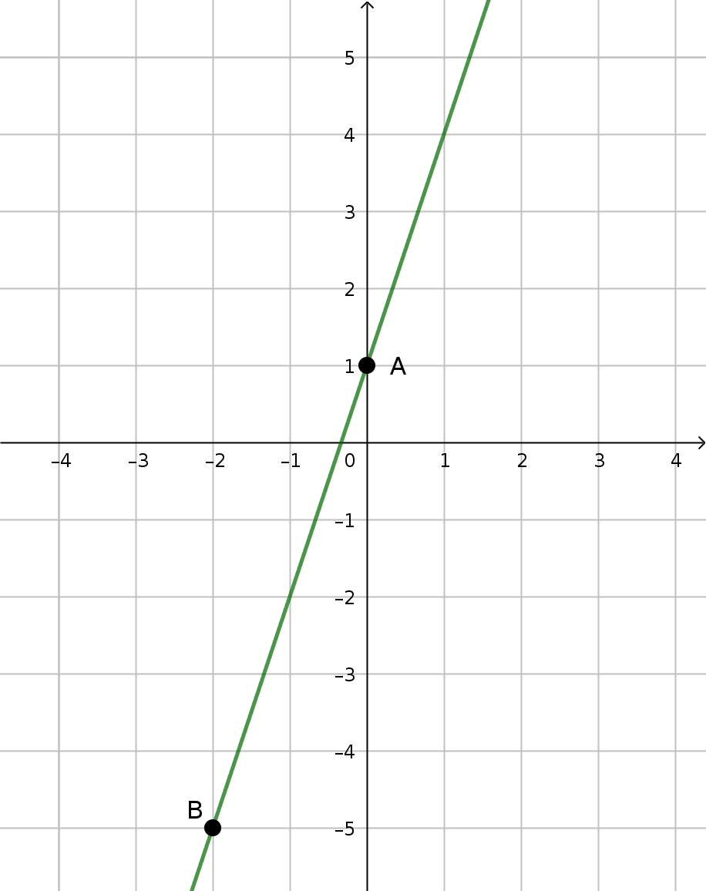
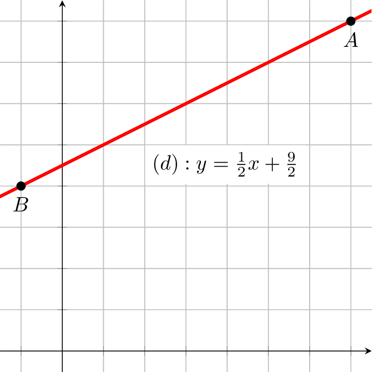
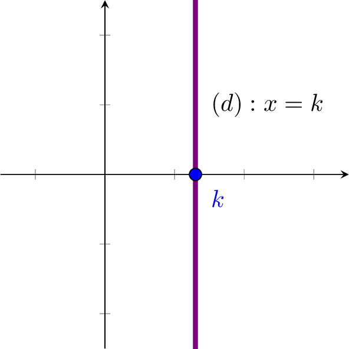
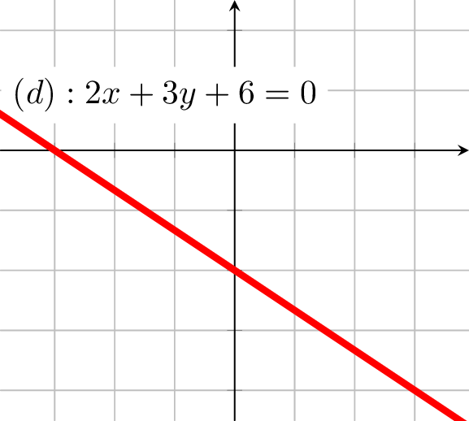
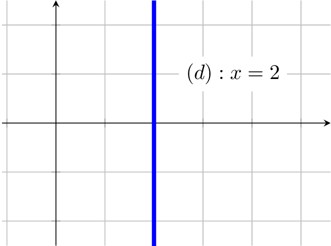
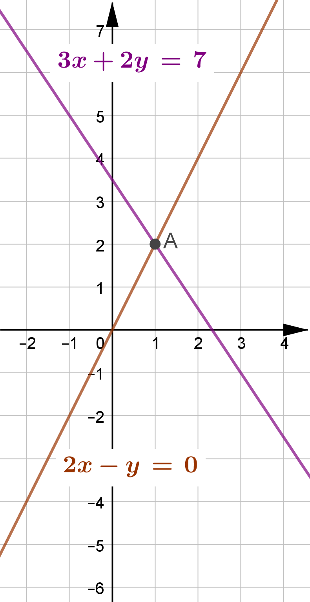
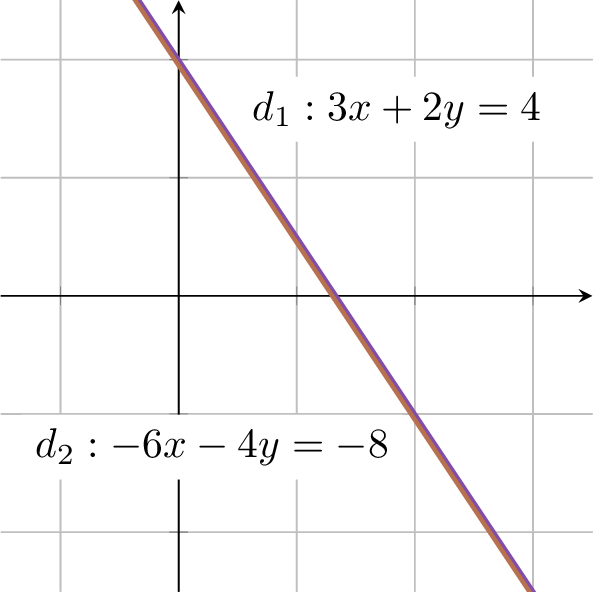

Droites et systèmes
Équations de droites
Définition : Équation réduite de droites
Definition
L’ensemble des points $M$ de coordonnées $(x;y)$, solution de l’équation $y=mx+p$, est une droite.
L’équation de la forme $y=mx+p$ est appelée équation réduite de droite.
Exemple
$y=3x+1$ est une équation de droite. Les solutions sont les coordonnées des points de la droite $(d)$.
On dit aussi que la droite $(d)$ a pour équation $y=3x+1$
Le point $A(0;1)$ est une solution de l’équation car ses coordonnées vérifient l’équation, car :
$$3\times x_A+1=3\times 0+1=1=y_A ~\iff~ y_A=3x_A+1$$
De même, on a $B(-2~;~-5)\in (d)$

Représentation des solutions de l’équation : $y=3x+1$
Remarque
- $y=mx+p$ est l’équation réduite de la droite $(d)$.
- $m$ est le coefficient directeur de la droite.
- $p$ est l’ordonnée à l’origine de la droite.
Propriété : Coefficient directeur
Prop
Soient les points $A(x_A;y_A)$ et $B(x_B;y_B)$ appartenant à la droite $(d)$ d’équation $y=mx+p$.
On a :
$$m=\cfrac{\Delta y}{\Delta x}=\cfrac{y_B-y_A}{x_B-x_A}$$
Methode
Établir l’équation d’une droite
Soient $A(7;8)$ et $B(-1;4)$
Le coefficient directeur $m$ de la droite $(AB)$ est :
$$m=\cfrac{\Delta y}{\Delta x}=\cfrac{y_B-y_A}{x_B-x_A}=\cfrac{4-8}{(-1)-7}=\cfrac{-4}{-8}=\cfrac{1}{2}$$
On a $A\in (AB)$ donc :
$$y_A=m\times x_A+p ~\iff~ p=y_A-m\times x_A=8-\cfrac{1}{2}\times 7=\cfrac{9}{2}$$
Au final : $\quad (AB) : y=\cfrac{1}{2}x+\cfrac{9}{2}$

Remarque
Les droites parallèles à l’axe des ordonnées n’ont pas d’équation réduite.
En effet, si $(AB)$ est parallèle à l’axe des ordonnées alors $x_A=x_B$.
Le coef. dir. $m=\cfrac{y_B-y_A}{x_B-x_A}$ n’est donc pas défini car $(x_B-x_A)=0$.
L’équation d’une droite parallèle à l’axe des abscisses est de la forme : $~x=k~$

Définition : Équations cartésiennes de droites
Definition
Les équations de la forme $ax+by+c=0$ sont apellées équations cartésiennes de droites.
L’ensemble des points $M$ de coordonnées $(x;y)$ est une droite.
Exemple
$2x+3y+6=0$ est une équation cartésienne de la droite $(d)$.
On peut retrouver l’équation réduite de $(d)$ :
$$ \begin{aligned} 2x+3y+6=0 & \iff 3y=-2x-6 \\ ~ & \iff y=\cfrac{-2}{3}x-2 \end{aligned} $$

Remarque
Les droites parallèles à l’axe des ordonnées ont une équation cartésienne avec $b=0$.
La droite $(d)$ d’équation $x=2$ est parallèle à l’axe des ordonnées.

Systèmes d’équations
Définition : Système d’équations
Definition
Un système d’équations se présente sous la forme de $2$ (ou plus) équations à $2$ (ou plus) inconnues.
La (ou les) solution(s) de ce système doit vérifier les $2$ (ou plus) équations.
Exemple
Soit le système suivant :
$$ S:\begin{cases} 3\textcolor{red}{x}+2\textcolor{blue}{y}=7 \\2\textcolor{red}{x}-\textcolor{blue}{y}=0 \end{cases} $$
La solution de ce système est $(1;2)$.
En effet, si $\textcolor{red}{x=1}$ et $\textcolor{blue}{y=2}$
$$ \begin{cases} 3\times \textcolor{red}{1}+2\times \textcolor{blue}{2}=7 \\2\times \textcolor{red}{1}-\textcolor{blue}{2}=0 \end{cases} $$
Propriété géométrique
Prop
Résoudre un système constitué des 2 équations de droites revient à trouver les coordonnées du point d’intersection des droites.
Exemple
Soit le système suivant :
$$ \definecolor{c1}{rgb}{0.505, 0.301, 0.658} \definecolor{c2}{rgb}{0.721, 0.443, 0.301} S:\begin{cases} \textcolor{c1}{{3x+2y=7}}\\\textcolor{c2}{{2x-y=0}} \end{cases} $$
Les droites d’équations $~\textcolor{c1}{{3x+2y-7=0}}~$ et $~\textcolor{c2}{{2x-y=0}}~$ ont un point d’intersection $A(1;2)$.
En effet :
- Si $A\in d_1$ alors ses coordonnées vérifient l’équation $\textcolor{c1}{{3x+2y=7}}$
- Si $A\in d_2$ alors ses coordonnées vérifient l’équation $\textcolor{c2}{{2x-y=0}}$

Méthode par substitution
Methode
Cette méthode consiste à :
- Exprimer une inconnue en fonction de l’autre.
- Substituer cette inconnue par son expression, dans l’autre équation, pour obtenir une équation à une seule inconnue.
Exemple
Soit le système : $\qquad S:\begin{cases}3x+2y=7\\2x-y=0\end{cases}$
On a :
$$ \definecolor{c3}{rgb}{0.066, 0.2 , 0.333} \begin{aligned} S & \iff\begin{cases}3x+2\textcolor{red}{y}=7\\\textcolor{red}{y=2x}\qquad\textcolor{c3}\rarr{\small{\text{on exprime }y\text{ en fonction de }x}}\end{cases} \\ & \iff\begin{cases}3x+2\textcolor{red}{(2x)}=7\qquad\textcolor{c3}\rarr{\small{\text{on remplace }y\text{ par son expression}}}\\\textcolor{red}{y=2x}\end{cases} \\ & \iff\begin{cases}7x=7\\y=2x\end{cases}\iff\begin{cases}x=1\\y=2\end{cases} \end{aligned} $$
Méthode par combinaison
Methode
Cette methode consiste à faire une combinaison linéaire des lignes 1 et 2 pour obtenir une équation à une inconnue.
Exemple
Soit le système :
$$S:\begin{cases}L_1:&3x+2y=7\\L_2:&2x-y=0\end{cases}\quad\Lrarr\quad S:\begin{cases}L_1:&3x\textcolor{c3}{+2y}=7\\2\times L_2:&4x\textcolor{c3}{-2y}=0\end{cases}$$
Donc :
$$ \begin{aligned} L_1+(2\times L_2) & \iff (3x\textcolor{c3}{+2y})+(4x\textcolor{c3}{-2y})=7+0 \\ ~ & \iff 3x+4x\textcolor{c3}{+2y-2y}=7 \\ ~ & \iff 7x=7\qquad\iff \boxed{x=1} \\ \end{aligned} $$
Pour trouver $y$ :
$$ \begin{aligned} L_2 & \iff 2\boxed{x}-y=0 \\ ~ & \iff 2\times \boxed{1}-y=0\qquad\iff y=2 \\ \end{aligned} $$
La solution du système est $(1;2)$
Propriété : Nombre de solutions
Rem
Il se peut que certains systèmes ne possèdent pas de solution ou une infinité.
Exemple
$$S_1:\begin{cases}3x+2y&=4\\-6x-4y&=1\end{cases}$$
On a :
$$S_1 \iff\begin{cases}2y & =-3x+4 \\ -4y & =6x+1\end{cases} \iff\begin{cases}y=\cfrac{-3}{2}x+2 \\ y=\cfrac{6}{-4}x+\cfrac{1}{-4}\end{cases} \iff\begin{cases}y=\cfrac{-3}{2}x+2 \\ y=\cfrac{-3}{2}x-\cfrac{1}{4}\end{cases}$$
Les 2 droites représentées par les 2 équations du système ont même coefficient directeur $\left(\cfrac{-3}{2}\right)$.
Leurs ordonnées à l’origine sont différentes $\left(2\neq\cfrac{-1}{4}\right)$ donc elles sont donc strictement parallèles.
Il n’existe pas de point d’intersection donc pas de solutions au système $\Rarr~S=\emptyset$
Exemple
$$S_2:\begin{cases}3x+2y&=4\\-6x-4y&=-8\end{cases}$$
On a :
$$S_2 \iff\begin{cases}2y =-3x+4\\-4y =6x-8\end{cases}~\iff\begin{cases}y=\cfrac{-3}{2}x+2\\y=\cfrac{6}{-4}x+\cfrac{-8}{-4}\end{cases}~\iff\begin{cases}y=\cfrac{-3}{2}x+2\\y=\cfrac{-3}{2}x+2\end{cases}\\$$
Les 2 droites représentées par les 2 équations du système ont même coefficient directeur $\left(\cfrac{-3}{2}\right)$ et même ordonnées à l’origine $(2)$ donc elles sont donc confondues.
Les solutions du système sont les couples $(x;y)$ tel que $y=\cfrac{-3}{2}x+2$
$$S=\left\{(x;y)~\text{ tel que }~y=\cfrac{-3}{2}x+2\right\}$$
